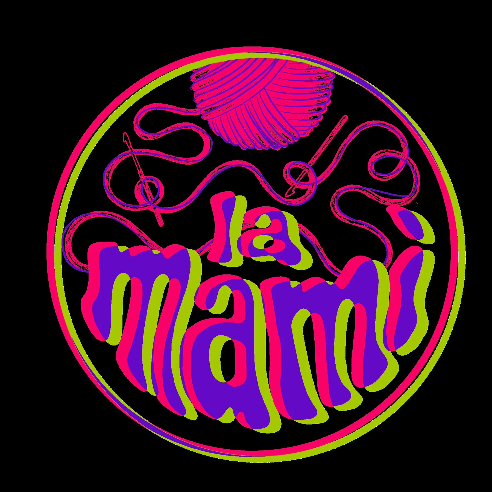

👜 Fatto a mano, fatto per durare.
Realizzo borse, accessori e piccoli oggetti all'uncinetto, giocando con materiali, colori e dettagli. Ogni pezzo è fatto a mano e proprio per questo è un po' diverso da tutti gli altri. ✨
🧶 Tutto è iniziato quasi per gioco.
Faccio uncinetto da quasi due anni e quella che doveva essere una semplice curiosità si è trasformata, punto dopo punto, in una delle mie passioni più grandi.
Sarà anche colpa del mio lato da Capricorno testardo ♑️: quando inizio qualcosa, difficilmente lo lascio a metà. Così, tra fili, colori, prove riuscite (e altre un po' meno 😅), è nato LaMamì.
Un progetto inizialmente un po' confuso e decisamente “fuori contesto” — come recita ancora la mia bio di Instagram — che, quasi senza accorgermene, ha trovato il suo posto. 💜💚

Articoli
Ecco alcune delle creazioni disponibili al momento. Scrivimi per verificare la disponibilità.
Chalk Bag


Classy Bags

F bag
Un'occasione speciale, cento piccoli dettagli cuciti a mano.
da 40€
M bag
La borsa della testimone: versatile, luminosa e con una fodera che sorprende.
35€
V bag
Una personalizzazione del modello Marti, con tracolla più lunga e lurex rosa.
35€
A bag
Mattonelle all'uncinetto e cordino champagne: semplice, ma con la luce giusta.
30€SUMMERY VIBES
Piccoli pezzi all’uncinetto fatti per l’estate, da indossare e personalizzare come vuoi.


WINTERY VIBES
Pezzi morbidi e caldissimi per l’inverno, fatti a mano e pensati per dare carattere anche alle giornate più fredde.


Accessori
Piccole idee fatte a mano, perfette per personalizzare la borsa o per un pensierino speciale.
Un Natale fatto a mano
Quest'anno sotto l'albero metti qualcosa di unico: fili intrecciati con cura, colori da scegliere e piccoli regali che scaldano davvero. Ogni creazione è fatta a mano, una alla volta, con tanto amore. ✨
Balaclava Antonia
Un abbraccio morbido per le giornate più fredde.
da 40€* · Scopri il regalo →Classic Beanie
Lana grossa, caldissima e morbidissima. Un classico da regalare.
30€ · Scopri il regalo →Funny Beanies
Zucche, orsetti e idee tutte da inventare: per grandi e piccoli.
30€ · Scopri il regalo →
Fascia in lana
100% lana, per tenere al caldo anche nelle giornate più fredde.
Scopri il regalo →20€
Fascia per capelli / cintura
Due modi di indossarla, un unico regalo fatto a mano. Pattern di @arual.lab.
Scopri il regalo →15€
Portachiavi Anguria
Un piccolo regalo colorato, in cotone e imbottito a mano.
Scopri il regalo →5€
Porta lucidalabbra Girasole
Porta lucidalabbra da appendere alla borsa.
Scopri il regalo →5€* Il prezzo della Balaclava Antonia può variare in base al materiale scelto.
Questa collezione crescerà con nuove idee regalo. Hai già in mente un colore o un dettaglio speciale? Scrivimi su Instagram per pensare insieme a un regalo personalizzato.
Non sei ancora convinto? Guarda gli altri articoli realizzati per trovare ispirazione!
Scopri tutti gli articoli →